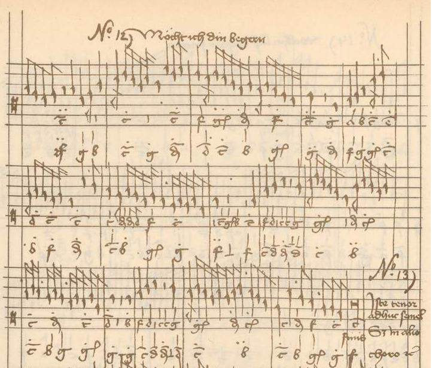

Happy New Year
Posted by cmotuz on January 11, 2012
Happy New Year!
It’s been a lot of fun coming to grips with OMR and discovering for myself how brilliant ideas get put together to develop a cutting edge piece of technology. There’s no denying it though, every so often we hear:
“That’s all very clever. What’s it for?”
My job as musicologist on the team is to make sure that not only does the answer to this question guide our research (not to mention our user interfaces), but to try to see the applications of new developments the moment they enter the horizon of technical possibility. That’s why Remi and I sat down with a pen and paper and asked “If computers can learn to read music and analyze it directly from scores, how can this help musicologists / theorists and performers?” Here are some of the things we came up with:

The most obvious application is in finding tendencies about how music works in different genres and periods. For example, let’s look at musica ficta, or the practice of adding sharps or flats to written notes to mark the ends of phrases. This is something that we know musicians in the 15th and 16th centuries did extensively, but they almost never wrote down where or how, so it can be difficult to peform this music now. In 2005, McGill’s own Frauke Jürgensen published her dissertation, in which she analyzed this ficta in a source where it was (mostly) written down - the Buxheim Organ Book, compiled in Munich between ca. 1450 and 1470. By finding patterns and statistical trends that might reflect the decision-making of the Buxheim scribes, she was able to help academics and performers determine where they might add sharps and flats in other sources, where the ficta is not written in.
In order to teach the computer to look for these trends, Frauke first had to enter every single note of the substantial Buxheim Organ Book into a programme called Humdrum. This process took months of data entry, which sounds quite “old-school”, but the same would be necessary to do this work today. The difference with OMR is that the computer will recognize the notes and enter them into a searchable interface, leaving the researcher to start with the interesting part, i.e. analyzing the masses of data.
This is just one application. For performers and music teachers choosing repertoire for concert programmes or for students, the SIMSSA project will eventually allow them to search the Internet for pieces according to parameters such as forces at hand, length, difficulty, and anything else that a computer could learn to analyze. While “How many instruments are needed?” is a relatively simple question to teach a computer to answer, “How hard is a piece?” is more involved: elements of difficulty might include the number of notes per beat, range, whether there are large leaps, idiomatic/unidiomatic instrumental techniques and so on.
The uses for the SIMSSA project above are just the tip of the iceberg. Stepping back every so often and making sure we have these future applications in mind not only steers our research towards concrete goals, but helps us come up with new ideas about what kinds of features our designs should incorporate.
There’s still a long way to go of course before these applications become reality - a fact I’m reminded of as I head to the library now to peruse Giovanni Gabrieli’s complete works for pieces with five soprano parts. With any luck, in a few years, I’ll be able to get a computer to do this for me.